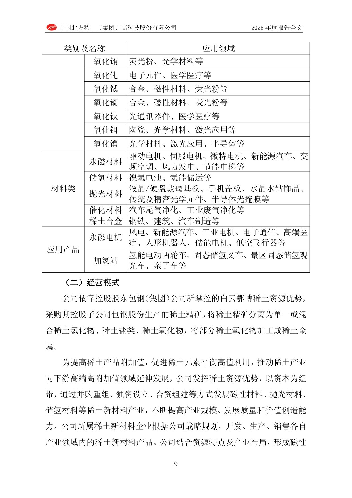
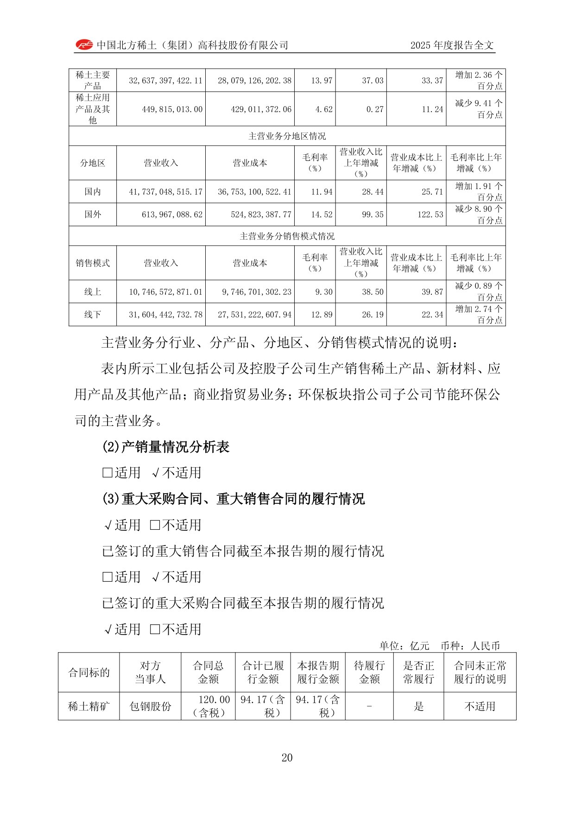

CHINA NORTHERN RARE EARTH 🇨🇳 (SSE:600111)
Model biznesowy w obrazach

Portfel produktowy i zastosowania. Strona chińskojęzycznego raportu rocznego 2025 (China Northern Rare Earth).
Co widać na tej stronie: Tabela układa produkty spółki w trzy warstwy łańcucha wartości. Pierwsza to tlenki pojedynczych pierwiastków ziem rzadkich (m.in. europu, itru, terbu, dysprozu, holmu, erbu, lutetu) i ich zastosowania: luminofory, materiały optyczne, komponenty elektroniczne, ceramika, lasery i półprzewodniki. Druga to materiały: magnesy trwałe (silniki napędowe i serwo, pojazdy elektryczne, klimatyzacja inwerterowa, energetyka wiatrowa, windy), materiały do magazynowania wodoru, materiały polerskie (szkło LCD i dysków, optyka precyzyjna, maski półprzewodnikowe), materiały katalityczne (oczyszczanie spalin) oraz stopy ziem rzadkich. Trzecia to gotowe produkty: silniki z magnesami trwałymi (wiatr, pojazdy elektryczne, roboty humanoidalne, medycyna, lotnictwo niskiego pułapu) i produkty wodorowe. Całość pokazuje schodzenie spółki w dół łańcucha, od surowego tlenku po wyroby o wysokiej wartości dodanej.

Przychody wg produktów, regionów i kanałów sprzedaży. Strona chińskojęzycznego raportu rocznego 2025 (China Northern Rare Earth).
Co widać na tej stronie: Trzy przekroje głównej działalności (kwoty w juanach, CNY). Wg produktu: główne produkty ziem rzadkich dały 32,6 mld CNY przychodu (wzrost o 37% rok do roku) przy marży brutto około 14%, a produkty aplikacyjne i pozostałe tylko 0,45 mld CNY. Wg regionu: rynek krajowy to zdecydowana większość, 41,7 mld CNY (marża 11,9%), a eksport zaledwie 0,61 mld CNY, mimo wzrostu o 99% rok do roku. Wg kanału: sprzedaż offline 31,6 mld CNY (marża 12,9%) dominuje nad online 10,7 mld CNY (marża 9,3%). Widać silne uzależnienie od rynku chińskiego oraz od zakupu koncentratu ziem rzadkich od spółki-matki Baogang.
W kontekście: Wydobycie (upstream)
Czym jest spółka. China Northern Rare Earth to chińska spółka państwowa działająca w niemal całym łańcuchu REE - od koncentratu powstającego przy wydobyciu rudy żelaza, przez separację i metalurgię, po materiały magnetyczne i inne produkty funkcjonalne. Jej początki sięgają 1961 r., a kapitał zakładowy wynosi 3,62 mld CNY. Około 37% akcji posiada Baogang Group, czyli grupa kontrolująca operacje wydobywcze w Bayan Obo.
Dostęp do surowca. Najważniejszym aktywem upstream jest powiązanie z Bayan Obo w Mongolii Wewnętrznej. Złoże ma zawierać ponad 35 mln ton REO, odpowiadać za około 83% chińskich zasobów REE oraz ponad 30% zasobów światowych. Średnia zawartość rudy jest szacowana na 6% TREO.
China Northern Rare Earth nie jest przedstawiona w dowodach jako bezpośredni właściciel całej kopalni. Koncentrat pozyskuje od powiązanych podmiotów Baogang, które prowadzą wydobycie rudy żelaza i odzyskują minerały ziem rzadkich jako produkt uboczny. Taka konfiguracja może zapewniać strukturalnie niższy koszt surowca niż w samodzielnych kopalniach REE, ale jednocześnie uzależnia spółkę od właściciela upstream i ustalanej przez niego formuły cenowej.
W pierwszej transzy chińskich limitów na 2024 r. Northern Rare Earth otrzymała 188 650 ton kwoty wydobywczej dla skalnych rud lekkich ziem rzadkich. Zewnętrzne źródło szacuje jej udział na około 67% chińskiej kwoty wydobywczej LREE. Dla porównania całkowita chińska kwota wydobywcza w 2024 r. wynosiła 270 000 ton REO. Konkretne limity przyznane spółce na 2025 r. i 2026 r. są NIE UJAWNIONE.
Recykling i odzysk surowców ze zużytych produktów na skalę istotną dla działalności są NIE UJAWNIONE.
Znaczenie biznesowe: dostęp do ogromnego złoża i koncentratu odzyskiwanego przy produkcji rudy żelaza wzmacnia bezpieczeństwo surowcowe, lecz oddziela ekonomicznie spółkę przetwórczą od podmiotu kontrolującego wydobycie i cenę wsadu.
Dla inwestora: wielkość zasobów Bayan Obo nie jest tożsama z zasobami należącymi bezpośrednio do China Northern Rare Earth, dlatego analizę przewagi surowcowej trzeba łączyć z relacją właścicielską i mechanizmem zakupów od Baogang.
W kontekście: Separacja, rafinacja i metalurgia
Rola w łańcuchu. China Northern Rare Earth przetwarza koncentrat na sole, tlenki i metale ziem rzadkich, a następnie na materiały magnetyczne, polerskie, katalityczne i służące do magazynowania wodoru. Wytwarza również akumulatory NiMH oraz silniki z magnesami trwałymi. To integracja pionowa: wartość nie kończy się na koncentracie, lecz przechodzi przez separację pierwiastków do produktów wykorzystywanych przez producentów magnesów i urządzeń.
W pierwszej transzy limitów na 2024 r. spółce przypisano 170 001 ton produktów po separacji i metalurgii. Całkowita chińska kwota separacyjno-hutnicza wynosiła wtedy 254 000 ton. Zewnętrzny szacunek przypisuje Northern Rare Earth około 70% chińskich mocy separacji lekkich ziem rzadkich, lecz nie jest to wartość potwierdzona przez spółkę ani SSE.
Rozbudowa technologiczna. Projekt separacyjny o mocy 5 000 ton REO rocznie ma umożliwić pełną separację 15 indywidualnych pierwiastków do 2026 r.. Rozszerzałoby to działalność z produkcji mieszanin i podstawowych tlenków w stronę dokładniej wydzielonych produktów, których jakość i czystość są kluczowe dla dalszej metalurgii.
Przed rozbudową zdolność wytwarzania stopów materiałów magnetycznych była szacowana na 100 000 ton rocznie. Pierwsza faza nowej linii stopów NdFeB o mocy 50 000 ton rocznie została ukończona i uruchomiona. Projekt o tej samej docelowej mocy spółka przedstawiała jako największą w Chinach jednolokalizacyjną instalację stopów do magnesów ziem rzadkich.
W próbie przemysłowej osiągnięto koncentrat o zawartości 60,83% REE podczas trwającego 34 dni testu. Deklarowany odzysk ceru i lantanu wynosi 95%, wobec wskazanej w tym samym słabym źródle średniej konkurencji na poziomie 93%. Dane te pokazują możliwą sprawność procesu, ale wymagają ostrożności z powodu jakości źródeł.
Znaczenie biznesowe: skala separacji i rozbudowa produkcji stopów przesuwają miks działalności od podstawowych tlenków ku materiałom funkcjonalnym, jednocześnie zwiększając znaczenie kontroli jakości, uzysków i wykorzystania nowych mocy.
Dla inwestora: moce nominalne nie są równoznaczne z produkcją ani sprzedażą, dlatego projekty 5 000 ton i 50 000 ton należy analizować razem z wolumenami operacyjnymi oraz tempem absorpcji materiału przez producentów magnesów.
W kontekście: Rynek: bilans podaż-popyt, ceny, prognozy do 2035
Podaż pozostaje zarządzana administracyjnie. Chiny wyprodukowały 270 000 ton REE w 2024 r., co odpowiadało około 69% światowej produkcji. Tylko 2 państwowe grupy zachowały prawo do przydziału kwot - China Northern Rare Earth i China Rare Earth Group - wobec 6 uprawnionych grup wcześniej. Daje to obraz rynku skoncentrowanego nie tylko geologicznie, ale również regulacyjnie.
Northern Rare Earth działa przede wszystkim w lekkich ziemiach rzadkich. Zewnętrzne szacunki przypisują jej 40% globalnej podaży LREE w 2025 r. oraz około 67% chińskiej kwoty wydobywczej LREE. Pierwsza wartość pochodzi z syntetycznej analizy strony trzeciej, dlatego nie powinna być traktowana jako oficjalny udział rynkowy.
Ceny koncentratu. Cena koncentratu o bazowej zawartości 50% REO wyniosła w czwartym kwartale 2025 r. 26 205 CNY za tonę. Było to o 37,13% więcej niż kwartał wcześniej oraz o ponad 56% więcej w ujęciu skumulowanym po kolejnych podwyżkach od czwartego kwartału 2024 r.. Za każdy 1 punkt procentowy zmiany zawartości REO cena jest korygowana o 524,10 CNY za tonę.
Wcześniejsze punkty trajektorii wynosiły 16 741 CNY za tonę w trzecim kwartale 2024 r., 18 825 CNY za tonę w drugim kwartale 2025 r. oraz 19 109 CNY za tonę w trzecim kwartale 2025 r.. Nie jest to jednak niezależny indeks rynkowy: kwartalną cenę dla Northern Rare Earth ustalają podmioty Baogang według średnich cen rynkowych z poprzedniego kwartału.
Odrębnym punktem odniesienia jest NdPr. Amerykański Departament Obrony zagwarantował konkurencyjnej MP Materials cenę minimalną 110 USD za kilogram NdPr, wobec wskazanej w źródle ceny rynku kontrolowanego przez Chiny wynoszącej 63 USD za kilogram. Nie należy bezpośrednio porównywać tych wartości z ceną koncentratu Northern Rare Earth, ponieważ dotyczą innego produktu, czystości, waluty i jednostki handlowej.
Wielkość popytu, bilans podaży i popytu, prognozy cenowe oraz ilościowe prognozy rynku do 2035 r. są NIE UJAWNIONE w dowodach. Nie ujawniono również oficjalnych limitów spółki na 2025 r. i 2026 r.
Znaczenie biznesowe: wynik spółki zależy jednocześnie od administracyjnie kontrolowanej podaży, rynkowych cen produktów oraz opóźnionej formuły ceny koncentratu kupowanego od podmiotu powiązanego.
Dla inwestora: brak publicznych kwot ogranicza możliwość budowy niezależnej prognozy wolumenu, a różne benchmarki cenowe trzeba rozdzielać według etapu łańcucha - koncentrat, tlenek, metal i stop nie są zamiennymi kategoriami.
W kontekście: Mapa kluczowych graczy w łańcuchu
Baogang Group i podmioty wydobywcze. Baogang Group posiada około 37% China Northern Rare Earth. Powiązane podmioty grupy kontrolują upstream w Mongolii Wewnętrznej i dostarczają koncentrat według kwartalnej formuły. Jest to najważniejsza relacja dostawcza i właścicielska spółki.
China Northern Rare Earth. Spółka jest państwowym integratorem lekkich ziem rzadkich - łączy dostęp do koncentratu Bayan Obo, separację, metalurgię i materiały funkcjonalne. W chińskim systemie kwot jest jedną z zaledwie 2 uprawnionych grup.
China Rare Earth Group. Drugi państwowy filar systemu koncentruje się przede wszystkim na ciężkich ziemiach rzadkich i ma około 68% chińskiej kwoty HREE. Wobec Northern Rare Earth jest zarówno punktem odniesienia, jak i partnerem: strony podpisały ramową umowę o współpracy dotyczącej działalności oraz kopalń w północnych i południowych Chinach.
Producenci materiałów i magnesów. JL MAG zawarł z Northern Rare Earth długoterminową umowę dostaw. Wolumen, wartość i minimalne zobowiązania odbiorcze są NIE UJAWNIONE. To przykład przejścia od separacji i metalurgii do odbiorców wykorzystujących NdPr i stopy NdFeB.
Konkurenci krajowi. Shenghe Resources osiągnęła 11,37 mld CNY przychodu w 2024 r. oraz 10,46 mld CNY w okresie 9M 2025, przy wzroście o 52,6% r/r. Xiamen Tungsten wykazał 8,376 mld CNY przychodu w pierwszym kwartale 2025 r.. Pierwsza faza jego zakładu w Baotou ma kosztować 462,22 mln CNY, przy docelowej mocy 20 000 ton rocznie.
Konkurenci zachodni. Lynas produkuje około 6 600 ton NdPr rocznie. MP Materials korzysta z amerykańskiej ceny podłogowej 110 USD za kilogram NdPr, co tworzy inny model ekonomiczny niż chiński łańcuch oparty na kwotach, skali i niższych cenach referencyjnych.
Znaczenie biznesowe: Northern Rare Earth znajduje się w centrum państwowo koordynowanego ekosystemu, pomiędzy kontrolowanym przez Baogang surowcem a skoncentrowanym przemysłem materiałów i magnesów.
Dla inwestora: granica między konkurencją, współpracą i polityką przemysłową jest tu płynna - China Rare Earth Group jest konkurentem w systemie kwot, ale jej specjalizacja w HREE częściowo uzupełnia pozycję Northern Rare Earth w LREE.
Ekspozycja na REE w liczbach
Przychody i wynik. W FY2025 przychód wyniósł 42,563 mld CNY, rosnąc o 29,11% r/r. Zysk netto przypisany akcjonariuszom osiągnął 2,251 mld CNY, czyli wzrósł o 124,17% r/r. Zysk skorygowany o zdarzenia jednorazowe wyniósł 2,056 mld CNY, przy wzroście o 128,10% r/r. Podstawowy EPS wyniósł 0,6227 CNY na akcję, a proponowana dywidenda 0,13 CNY na akcję.
Dla porównania w FY2024 spółka miała 32,966 mld CNY przychodu, mniej o 1,58% r/r, oraz 1,004 mld CNY zysku netto, mniej o 57,64% r/r. Bazą były wyniki FY2023: 33,497 mld CNY przychodu i 2,371 mld CNY zysku netto. Zestawienie pokazuje, że wzrost przychodów nie przekłada się liniowo na wynik końcowy.
W pierwszym półroczu 2025 r. przychód wyniósł 18,866 mld CNY, rosnąc o 45,24% r/r, a zysk netto osiągnął 0,931 mld CNY, ze wzrostem o 1 951,52% r/r. Zysk non-GAAP wyniósł 0,897 mld CNY i wzrósł o 5 644,93% r/r. Tak wysokie dynamiki odzwierciedlają także niską bazę porównawczą.
W trzecim kwartale 2025 r. przychód wyniósł 11,43 mld CNY, więcej o 33% r/r, a zysk netto 0,610 mld CNY, więcej o 69% r/r. Narastająco po 9M 2025 przychód osiągnął 30,29 mld CNY, a zysk netto 1,54 mld CNY, ze wzrostem wyniku o 280% r/r.
Wolumeny operacyjne. W trzecim kwartale 2025 r. spółka wyprodukowała 6 939 ton tlenków ziem rzadkich, więcej o 63% r/r, 12 197 ton metali ziem rzadkich, 19 745 ton materiałów magnetycznych oraz 12 101 ton materiałów polerskich. Sprzedaż wyniosła 9 837 ton REO i 19 557 ton materiałów magnetycznych.
pie title Produkcja według kategorii w trzecim kwartale 2025 r. - tony "Tlenki ziem rzadkich": 6939 "Metale ziem rzadkich": 12197 "Materiały magnetyczne": 19745 "Materiały polerskie": 12101
Produkcja raportowana dla trzeciego kwartału 2025 r. Źródło: Rare Earth Exchanges.
Wolumen obrotu produktami REE w pierwszym półroczu 2025 r. miał wynieść 95 200 ton REO, po wzroście o 52,63% r/r. Dane pochodzą jednak ze strony docelowej, która była niedostępna, dlatego mają niższą wiarygodność.
Moce i rentowność. Dostępne dane wskazują na 100 000 ton rocznie mocy stopów materiałów magnetycznych przed rozbudową oraz uruchomioną pierwszą fazę projektu stopów NdFeB o mocy 50 000 ton rocznie. Projekt separacji ma moc 5 000 ton REO rocznie. EBITDA TTM do września 2025 r. wynosiła 3 613 mln CNY. Mediana marży brutto od FY2020 do FY2024 wynosiła 13,6%, a jej szczyt w grudniu 2021 r. sięgnął 27,7%. Marża operacyjna w 2024 r. wynosiła około 5,6%.
Dokładny udział segmentu REE w przychodach jest NIE UJAWNIONY. Źródła opisują spółkę jako faktycznie skoncentrowaną na REE, ale nie podają wiarygodnego podziału przychodów między separację, metale, magnesy i pozostałe materiały. Produkcja NdPr jako osobna kategoria, produkcja gotowych magnesów oraz stan gotówki są NIE UJAWNIONE.
Znaczenie biznesowe: wzrost wolumenów obejmuje kilka etapów łańcucha, ale amplituda zysku jest większa niż amplituda przychodów, co wskazuje na silne działanie cen, miksu i kosztu koncentratu.
Dla inwestora: przy braku segmentowego rachunku wyników wolumeny tlenków, metali i materiałów magnetycznych są ważnym uzupełnieniem przychodów, lecz nie pozwalają samodzielnie ustalić rentowności poszczególnych ogniw łańcucha.
Kluczowe umowy - co znaczą
Koncentrat od Baogang - formuła z podmiotem powiązanym. Najważniejsza relacja nie jest klasycznym rynkowym offtake. Northern Rare Earth kupuje koncentrat od powiązanych podmiotów Baogang, które ustalają cenę w pierwszym miesiącu każdego kwartału na podstawie średnich cen rynkowych z poprzedniego kwartału. W czwartym kwartale 2025 r. cena koncentratu o bazowej zawartości 50% REO wyniosła 26 205 CNY za tonę, po wzroście o 37,13% kwartał do kwartału. Korekta za każdy 1 punkt procentowy zawartości REO wynosi 524,10 CNY za tonę.
To mechanizm cykliczny i opóźniony, a nie jednorazowa cena negocjowana z niezależnym dostawcą. Zapewnia ciągłość dostaw, ale pozostawia cenę kluczowego wsadu poza bezpośrednią kontrolą operacyjną spółki.
China Rare Earth Group - umowa ramowa. Strony podpisały strategiczną umowę ramową dotyczącą działalności REE oraz kopalń w północnych i południowych Chinach. Jest to umowa ramowa, bez ujawnionego wiążącego wolumenu, harmonogramu ani wartości. Skala w USD jest NIE UJAWNIONA.
JL MAG - długoterminowe dostawy. JL MAG informuje o długoterminowej umowie dostaw z China Northern Rare Earth. Wolumen, wartość, okres obowiązywania, minimalny odbiór oraz sankcje za niewykonanie są NIE UJAWNIONE. Nie ma podstaw, by klasyfikować ją jako take-or-pay.
Wsparcie państwa. Od stycznia do lipca 2020 r. spółka i jej jednostki zależne otrzymały 113 mln CNY dotacji rządowych. Jest to historyczny i nieaktualny punkt danych. Kwoty wsparcia za 2024 r. i 2025 r. są NIE UJAWNIONE.
Umowy typu MOU, kontrakty z ceną podłogową, przedpłaty odbiorców, wiążące kontrakty take-or-pay oraz wartość finansowania rządowego dla aktualnych projektów są NIE UJAWNIONE.
Znaczenie biznesowe: najtwardszą ujawnioną relacją ekonomiczną jest powiązany zakup koncentratu według formuły, podczas gdy porozumienie z China Rare Earth Group i umowa JL MAG nie mają ujawnionych parametrów pozwalających ocenić gwarantowany wolumen.
Dla inwestora: określenia „strategiczna” i „długoterminowa” nie zastępują danych o zobowiązaniu - bez wolumenu, ceny, okresu i kar nie można utożsamiać tych umów z zabezpieczonym przychodem.
Pozycja rynkowa i udziały
China Northern Rare Earth jest największym chińskim filarem lekkich ziem rzadkich. Jej pozycję opisują cztery różne miary, których nie należy mieszać:
- Około 67% chińskiej kwoty wydobywczej LREE.
- 188 650 ton kwoty dla skalnych rud lekkich REE w pierwszej transzy 2024 r., wobec 270 000 ton całkowitej chińskiej kwoty wydobywczej.
- Około 70% chińskich mocy separacji LREE według zewnętrznego szacunku.
- Około 40% globalnej podaży LREE w 2025 r. według syntetycznej analizy strony trzeciej.
Bayan Obo ma odpowiadać za około 83% chińskich zasobów REE i ponad 30% zasobów światowych. Zasoby złoża są szacowane na ponad 35 mln ton REO. Są to dane geologiczne dotyczące bazy surowcowej, a nie udział w bieżącej sprzedaży.
Chiny jako całość wyprodukowały 270 000 ton w 2024 r., około 69% światowej produkcji. Szersze, słabsze źródło przypisuje Chinom około 70% globalnej podaży z wydobycia oraz ponad 90% podaży rafinowanej. Te wartości odnoszą się do kraju, nie wyłącznie do spółki.
Oficjalny udział Northern Rare Earth w globalnych przychodach rynku, wielkość rynku w CNY lub USD oraz potwierdzony przez SSE ranking według produkcji są NIE UJAWNIONE. Oficjalne kwoty na 2025 r. i 2026 r. również są NIE UJAWNIONE.
Znaczenie biznesowe: pozycja spółki wynika z połączenia dostępu do Bayan Obo, administracyjnej kwoty i dużych mocy separacyjnych, a nie z jednej porównywalnej miary udziału rynkowego.
Dla inwestora: udział w kwocie, udział w mocach, udział w produkcji i udział w globalnej podaży opisują inne zbiory danych, dlatego wartości 67%, 70% i 40% nie są wzajemnym potwierdzeniem.
Mechanika konkurencji - na osiach
Klasa złoża i koszt surowca. Bayan Obo ma średnią zawartość około 6% TREO. Ziemie rzadkie są odzyskiwane przy wydobyciu rudy żelaza, co może dawać koszt strukturalnie niższy niż w kopalniach samodzielnie utrzymujących całą infrastrukturę REE. Przewagę tę ogranicza fakt, że Northern Rare Earth kupuje koncentrat od powiązanego Baogang, a nie księguje pełnej ekonomiki kopalni u siebie.
Integracja pionowa. Spółka obejmuje koncentrat, separację, metale, stopy magnetyczne i inne materiały funkcjonalne. Pierwsza faza projektu NdFeB o mocy 50 000 ton rocznie została uruchomiona, a projekt separacyjny 5 000 ton REO rocznie ma umożliwić wydzielenie 15 pierwiastków do 2026 r.. Integracja skraca łańcuch dostaw, ale zwiększa ekspozycję na wykorzystanie mocy i rentowność wielu etapów technologicznych.
Koszt wsadu. Słabe źródło szacuje udział surowca na 72% kosztów produkcji. Jeżeli kierunek jest prawidłowy, wzrost ceny koncentratu szybko przechodzi do kosztu wytworzenia. W czwartym kwartale 2025 r. cena wsadu wzrosła o 37,13% kwartał do kwartału do 26 205 CNY za tonę.
Sprawność procesu. Deklarowana stopa odzysku ceru i lantanu wynosi 95%, wobec średniej konkurencji 93%. W próbie przemysłowej osiągnięto koncentrację 60,83% podczas 34 dni. Obie wartości pochodzą ze słabych źródeł i nie zastępują potwierdzonych danych o kosztach jednostkowych.
Konkurencja krajowa. Shenghe Resources osiągnęła 11,37 mld CNY przychodu w 2024 r.. Xiamen Tungsten inwestuje 462,22 mln CNY w pierwszą fazę zakładu w Baotou, którego docelowa moc wynosi 20 000 ton rocznie. Lokalizacja konkurencyjnej instalacji na tym samym obszarze oznacza rywalizację o personel, przetwarzanie i odbiorców, nawet jeśli surowiec pozostaje skoncentrowany w systemie Baogang.
Konkurencja zachodnia i wsparcie państwa. MP Materials ma cenę podłogową 110 USD za kilogram NdPr, wobec wskazanej ceny chińskiej 63 USD za kilogram. Zachodni konkurent otrzymuje więc mechanizm ochrony ceny, podczas gdy Northern Rare Earth konkuruje skalą, integracją oraz uprzywilejowanym dostępem do chińskiej bazy surowcowej. Lynas produkuje około 6 600 ton NdPr rocznie.
Koszt środowiskowy. Historyczny szacunek zewnętrznego kosztu środowiskowego produkcji w Bayan Obo wynosił 34 739 CNY na tonę REO według danych z 2013 r.. Nie jest to koszt księgowy spółki ani aktualna wartość, lecz wskazanie, że część przewagi kosztowej może wynikać z kosztów ponoszonych poza rachunkiem wyników.
Znaczenie biznesowe: Northern Rare Earth wygrywa skalą, dostępem do współprodukowanego koncentratu i integracją, ale jej koszt nie jest niezależny od Baogang, a rozwój krajowych mocy zwiększa konkurencję w przetwórstwie i materiałach.
Dla inwestora: porównanie z MP Materials i Lynas wymaga uwzględnienia odmiennych systemów - chińskich kwot i powiązań właścicielskich z jednej strony oraz zachodnich cen podłogowych i wsparcia strategicznego z drugiej.
Koncentracja odbiorców i ryzyka
Koncentracja klientów. Według słabego źródła 5 największych klientów, w tym JL MAG, odpowiada za blisko 45% przychodów. Ponad 70% wolumenu PrNd ma trafiać do skoncentrowanej grupy producentów magnesów wysokiej wydajności. Zweryfikowany udział największego pojedynczego klienta w przychodach jest NIE UJAWNIONY.
Ryzyko ceny koncentratu. Baogang, będący istotnym akcjonariuszem i kontrolujący operacje upstream, ustala kwartalną cenę koncentratu na podstawie średnich cen poprzedniego kwartału. Mechanizm zapewnia formalną regułę, ale oznacza, że spółka nie negocjuje najważniejszego kosztu z niezależnym dostawcą. Wzrost ceny do 26 205 CNY za tonę w czwartym kwartale 2025 r. zwiększył presję kosztową w momencie, gdy cena była już o 37,13% wyższa niż kwartał wcześniej.
Ryzyko cyklu cenowego. Zysk netto spadł w FY2024 o 57,64% r/r, po czym wzrósł w FY2025 o 124,17% r/r. W tym samym czasie przychód zmienił się odpowiednio o -1,58% r/r i 29,11% r/r. Mechanizm jest operacyjny: zmiany cen produktów oraz koncentratu przechodzą przez relatywnie wąską marżę i wywołują większe wahania zysku niż sprzedaży.
Ryzyko regulacyjne i informacyjne. Od 2025 r. chińskie władze nie publikują standardowego podziału kwot, a państwowym podmiotom nakazano nieujawnianie wolumenów. W rezultacie limity Northern Rare Earth na 2025 r. i 2026 r. są NIE UJAWNIONE. Utrudnia to ocenę planowanej podaży oraz odróżnienie wzrostu wynikającego z ceny od wzrostu wolumenu.
Ryzyko koncentracji państwowej. Prawo do kwot mają tylko 2 grupy państwowe, wobec 6 wcześniej. Chroni to pozycję Northern Rare Earth przed rozdrobnioną konkurencją, ale zwiększa zależność od decyzji administracyjnych dotyczących podaży, cen i priorytetów przemysłowych.
Ryzyko marży i funkcji polityki przemysłowej. Marża operacyjna wynosiła w 2024 r. około 5,6%. Według źródła była utrzymywana na umiarkowanym poziomie, aby wspierać konkurencyjność producentów z dalszej części łańcucha. Oznacza to możliwy konflikt między maksymalizacją rentowności samej spółki a szerszym celem państwowej polityki przemysłowej.
Ryzyko środowiskowe i społeczne. Bayan Obo jest wiązane z degradacją środowiska, zanieczyszczeniem wód i gleby, utratą bioróżnorodności oraz problemami zdrowotnymi lokalnej ludności. Historyczny szacunek zewnętrznego kosztu produkcji wynosił 34 739 CNY na tonę REO w 2013 r.. Mechanizmem ryzyka są potencjalne koszty rekultywacji, ostrzejsze normy, zakłócenia działalności i napięcia społeczne.
Ryzyko jakości ujawnień. EBITDA 3 613 mln CNY, udział surowca w kosztach na poziomie 72%, koncentracja 45% przychodów wśród największych klientów i wolumen 70% PrNd sprzedawany skoncentrowanej grupie pochodzą ze słabych źródeł. Brak potwierdzenia w dokumentach spółki obniża ich użyteczność w precyzyjnym modelowaniu.
Wsparcie państwowe. Potwierdzony wpis obejmuje 113 mln CNY dotacji otrzymanych od stycznia do lipca 2020 r.. Aktualna kwota wsparcia za 2024 r. i 2025 r. jest NIE UJAWNIONA, więc historycznej wartości nie można traktować jako bieżącej skali subsydiów.
Znaczenie biznesowe: podstawowe ryzyka łączą się w jeden mechanizm - państwo kontroluje kwoty, Baogang kontroluje upstream i formułę kosztu, a skoncentrowani producenci magnesów absorbują znaczną część wolumenu.
Dla inwestora: największą luką analityczną nie jest brak informacji o wielkości Bayan Obo, lecz brak zweryfikowanych danych o pojedynczych klientach, aktualnych kwotach, gotówce i rentowności poszczególnych etapów łańcucha.
Słowniczek
- REE - pierwiastki ziem rzadkich oraz związane z nimi produkty i materiały.
- REO - ekwiwalent tlenków ziem rzadkich, stosowany do porównywania zasobów, kwot i wolumenów.
- TREO - całkowita zawartość tlenków ziem rzadkich w rudzie lub koncentracie.
- LREE - lekkie pierwiastki ziem rzadkich, obejmujące między innymi cer, lantan, neodym i prazeodym.
- HREE - ciężkie pierwiastki ziem rzadkich, zwykle rzadsze i wydobywane z innych typów złóż niż LREE.
- NdFeB - stop neodymu, żelaza i boru wykorzystywany do produkcji silnych magnesów trwałych.
- NdPr - łączna kategoria neodymu i prazeodymu, kluczowych surowców do magnesów NdFeB.
- PrNd - określenie mieszaniny lub produktów prazeodymowo-neodymowych, używane zamiennie z NdPr zależnie od rynku.
- NiMH - akumulator niklowo-wodorkowy wykorzystujący materiały zdolne do magazynowania wodoru.
- EPS - zysk przypadający na jedną akcję.
- non-GAAP - wynik skorygowany o wskazane zdarzenia jednorazowe lub pozycje nieuwzględniane w mierze zarządczej.
- EBITDA - wynik przed odsetkami, podatkami, amortyzacją rzeczową i amortyzacją wartości niematerialnych.
- TTM - dane za ostatnie kolejne miesiące tworzące pełny okres roczny.
- offtake - umowa odbioru określonego produktu, często zawierająca wolumen, okres i formułę cenową.
- umowa ramowa - porozumienie ustalające ogólne zasady współpracy, które bez dodatkowych zamówień nie musi gwarantować wolumenu.
- take-or-pay - umowa zobowiązująca odbiorcę do odebrania produktu albo zapłaty za niewykorzystany zakontraktowany wolumen.
- MOU - memorandum o porozumieniu, zwykle opisujące intencje stron bez pełnego zestawu wiążących zobowiązań.
Źródła
- Profil China Northern Rare Earth, historia, zasoby i kapitał - https://rare-earth-mining.com/china-northern-rare-earth/
- Bayan Obo, udział Baogang i ryzyka środowiskowe - https://www.rareearthexchanges.com/news/bayan-obo-mine-the-unseen-power-behind-global-technology-and-its-heavy-cost/
- Opis modelu biznesowego i integracji przemysłowej - https://financialfilings.com/companies/china-northern-rare-earth-group-high-tech-coltd/
- Szacunek mocy stopów magnetycznych - https://news.futunn.com/en/post/China-Northern-Rare-Earth-600111-SH
- Uruchomienie pierwszej fazy projektu stopów magnetycznych - https://news.futunn.com/en/post/67583605/northern-rare-earth-600111-the-rare-earth-industry-prospers-in
- Relacja z komunikatu spółki o projektach separacji i NdFeB - https://www.rareearthexchanges.com/p/chinas-northern-rare-earths-lays-out-2025-milestones-as-it-deepens-control
- Wyniki China Northern Rare Earth za FY2025 - https://news.futunn.com/en/post/71662064/northern-rare-earth-600111-sh-announced-its-2025-annual-performance
- Wyniki China Northern Rare Earth za FY2024 - https://webull.com/news/12608171255702528
- Dane porównawcze za FY2023 i FY2024 - https://www.marketscreener.com/quote/stock/CHINA-NORTHERN-RARE-EARTH-6496719/news/
- Wyniki za pierwsze półrocze 2025 r. - https://news.metal.com/newscontent/103505648-China-Northern-Rare-Earth-Reports-Surge-in-H1-Financial-Results
- Wyniki i wolumeny za trzeci kwartał oraz 9M 2025 - https://www.rareearthexchanges.com/p/northern-rare-earth-posts-surging-q3-output-jumps-projects-advance
- Wolumen obrotu produktami REE w pierwszym półroczu 2025 r. - https://www.filingreader.com/reports/northern-rare-earth-two-rare-earth-bases-strategy
- EBITDA TTM - https://www.gurufocus.com/term/enterprise-value-to-ebitda/SHSE:600111
- Historyczna marża brutto - https://ca.investing.com/pro/SHSE:600111/explorer/gp_margin
- Marża operacyjna, produkcja Chin i znaczenie Bayan Obo - https://www.rareearthexchanges.com/news/northern-china-rare-earth-group-inside-chinas-rare-earth-command-center/
- Chińskie kwoty wydobycia i separacji za 2024 r. - https://www.ctia.com.cn/en/news/43678.html
- Cena koncentratu w czwartym kwartale 2025 r. - https://www.rareearthexchanges.com/news/china-northern-rare-earth-announces-q4-2025-concentrate-price-adjustment-signals-cost-pressures-and-market-stability-play/
- Trajektoria ceny koncentratu do trzeciego kwartału 2025 r. - https://www.trendforce.com/news/2025/10/16/news-northern-rare-earth-baogang-reportedly-raise-4q-concentrate-prices-37-amid-chinas-export-curbs/
- Cena koncentratu w trzecim kwartale 2024 r. i mechanizm Baogang - https://www2.yicaiglobal.com/news/chinas-northern-rare-earth-and-baotou-steel-soar-on-rare-earth-price-hikes
- Cena koncentratu w drugim kwartale 2025 r. - https://gmteight.com/content/detail/254621
- Ramowa współpraca z China Rare Earth Group - https://www.moomoo.com/news/post/7206934
- Długoterminowe umowy dostaw JL MAG - https://www.jlmag.eu/jlmag-group/
- Historyczne dotacje rządowe - https://news.futunn.com/en/post/6939098/northern-rare-earth-600111-sh-received-a-total-of-113
- Porównanie Northern Rare Earth, Shenghe, Xiamen Tungsten i China Rare Earth Group - https://rare-earth-mining.com/china-northern-rare-earth-competitors/
- Szacunek udziału w chińskich mocach separacyjnych - https://www.ainvest.com
- Ograniczenie systemu kwot do dwóch grup i niejawność przydziałów - https://www.rareearthexchanges.com/news/china-quietly-issues-2025-rare-earth-quotas-a-new-era-of-secrecy-raises-global-market-uncertainty/
- Szacunki udziału w podaży, kosztów i koncentracji klientów - https://dcf-analysis.com/products/600111ss-porters-five-forces-analysis
- Szacunek udziału Bayan Obo w światowych zasobach - https://www.ourchinastory.com/en/15923/How-astonishing-are-the-reserves-of-Chinas-Bayan-Obo,-the-
- Porównanie ceny NdPr w Chinach i ceny podłogowej MP Materials - https://www.cruxinvestor.com